IN_FLIGHT - local simulator proof captured
Mint onboarding/auth/reset/restore integration
Rapport du 13 juin 2026. La phase a maintenant un contrat, des fixtures, une première tranche produit, une preuve simulateur iPhone, et un garde d'installation pour le cas Keychain persistant. Le simulateur ne clôt pas les risques Keychain/iCloud/backup, auth redirect ou Apple entitlement.
Preuves locales
| Preuve | Statut | Note |
|---|---|---|
| iPhone 17 Pro simulator | PASS | Landing -> /start -> /onb -> terminal dossier. |
| Account handoff simulator | PASS | Login + inscription Apple-primary affichent Conserver/Repartir. Le profil wedge session-only est détecté sur l'écran inscription. |
| Maestro route-contract | PASS | flow_landing_to_diagnostic_onboarding.yaml passe via watchdog: landing -> diagnostic, sans prompt de chat vide. |
| Maestro route-contract post-retry | PASS | Repassé sur iPhone 17 Pro après le correctif retryable claim: landing -> diagnostic -> intentions. |
| Maestro diagnostic Situation | PASS | flow_diagnostic_situation_scene.yaml passe: repères captés, données manquantes, pas de fallback retraite. Repassé après le correctif session-profile. |
| Maestro diagnostic Situation post-retry | PASS | Repassé sur iPhone 17 Pro après le correctif retryable claim: diagnostic terminal avec repères et dossier visible. |
| Terminal actions | PASS | Continuer, Créer un compte, Repartir de zéro, Sortir. |
| Reset local | PASS | Repartir de zéro revient à l'entrée onboarding. |
| Flutter tests onboarding/DataSpine | PASS | 105 tests ciblés. |
| Flutter tests reset/secure storage | PASS | 119 tests ciblés, incluant purge fresh install, retry pending, retry backend claim et clearAll secure. |
| Flutter tests handoff/auth | PASS | 82 tests ciblés: choix absent séparé, login compte existant sans claim implicite, conserver explicite, repartir, claim backend retryable, expiration, budget/lettres, UI inscription, profil wedge session-only, magic-link. |
| Flutter tests auth screens | PASS | 100 tests sur auth screens, handoff et AuthProvider. |
| Flutter regression combinée | PASS | 185 tests sur DataSpine, onboarding, auth, reset, secure storage et retraite. |
| Analyze/routes/i18n/compliance | PASS LOCAL | Analyse, route registry, ARB parity 6986 clés, banned terms, accent lint, public-doc admission lint. |
Captures simulateur
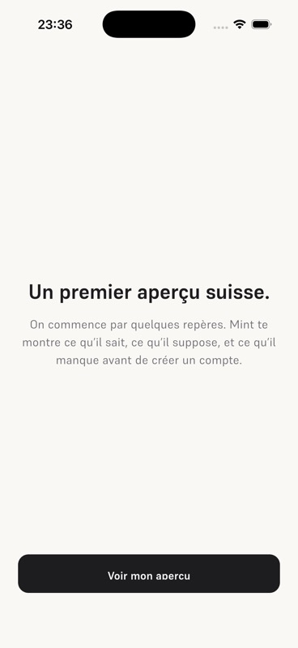
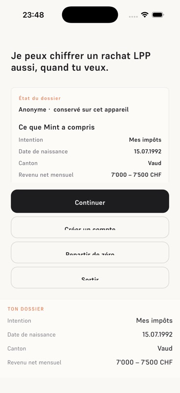
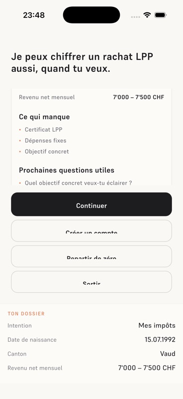
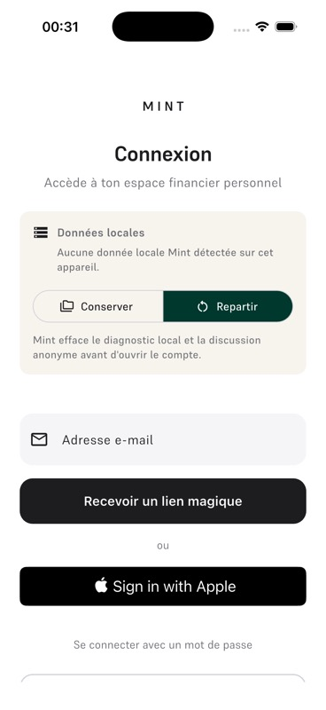
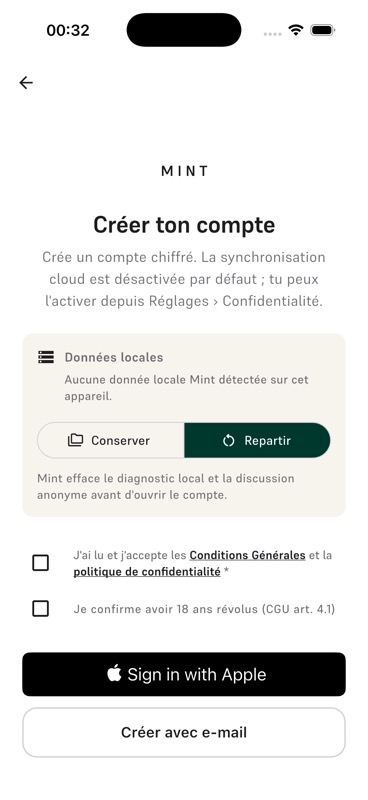
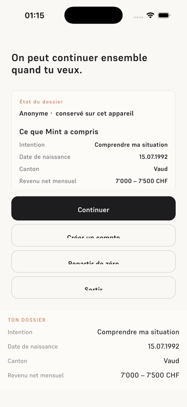
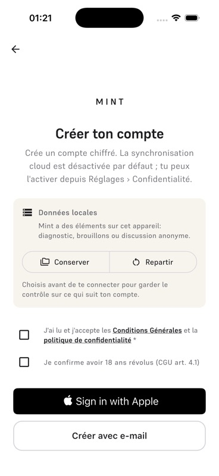
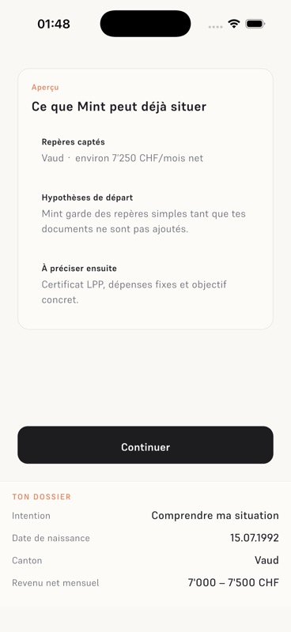
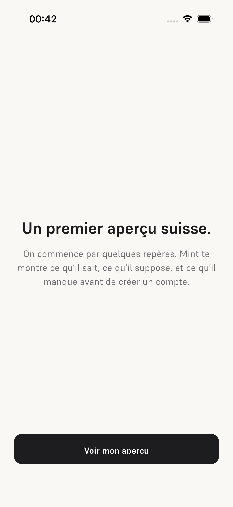
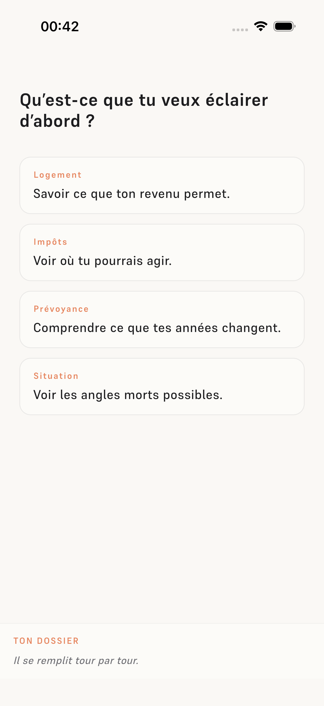
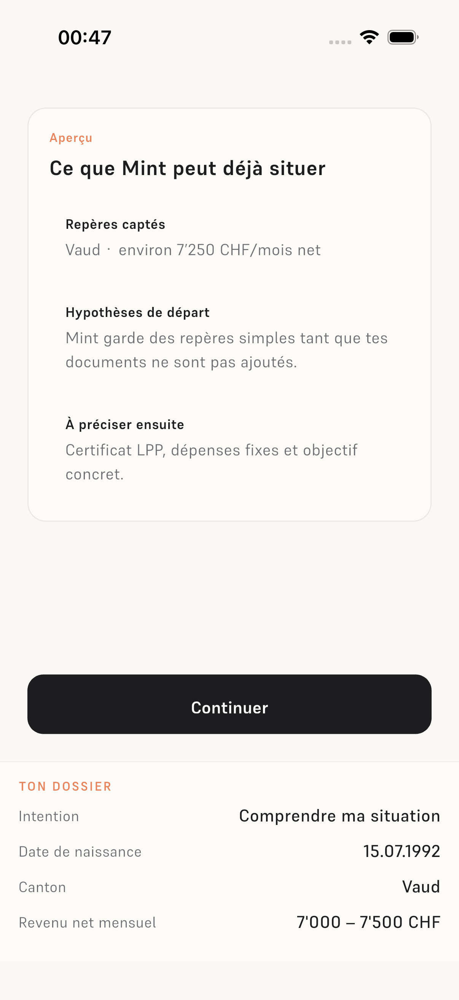
Gates
| Gate | Statut | Note |
|---|---|---|
| G1 Maestro/walker | PASS TARGETED | Flow Maestro route-contract passé; walker persona large reste ouvert. |
| G2 Julien/device | OPEN | Obligatoire pour Keychain, iCloud/backup, auth et Apple. |
| G3 CI/dev/local | PARTIAL | Local vert; CI/dev équivalence après workflow branche. |
| G4 Régression | PASS LOCAL | Tests ciblés onboarding, DataSpine et secure storage verts. |
| G5 Lints/parity/compliance | PASS LOCAL | Checks locaux verts. |